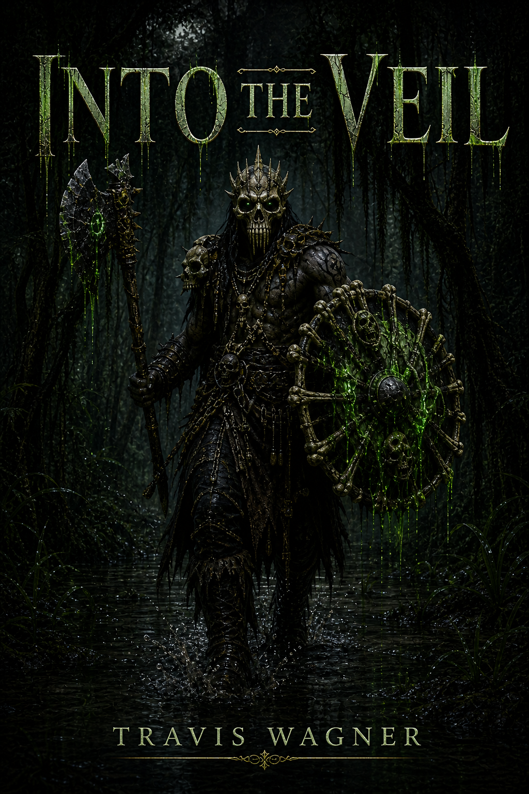

Volume I
Into the Veil
A mercenary scout leaves Veyrholm by the Ashen Road and crosses through the Miregate into Greenfire Marsh, where old gods rot and every step deeper asks for a price.
Explore Volume I
Series
Three immersive tomes to usher you behind the veil.
The Veil follows a dark fantasy progression across the Veil Continent, beginning near Veyrholm and the Ashen Road, crossing through the Miregate into Greenfire Marsh, widening along the Umbral Cliffs and Thornwake Swamp, and descending at last toward the Drowned Catacombs beneath Slatewater Deep.
Volumes
This series page collects every current volume in one place. Future series can follow this same pattern with their own page and volume list.
A mercenary scout leaves Veyrholm by the Ashen Road and crosses through the Miregate into Greenfire Marsh, where old gods rot and every step deeper asks for a price.
Explore Volume I
A dark elf watches the next kingdom from the Umbral Cliffs, then follows the breach into Thornwake Swamp with a secret that could close the Veil or crown what waits beyond it.
Explore Volume II
A deep dragon crawls through the Drowned Catacombs below Slatewater Deep, where the Shattered Gate reveals the truth the surface kingdoms ignored.
Explore Volume IIIThe Veil is built around forbidden crossings, fractured rules, and characters who learn that the border between worlds was never as sealed as people believed.
Begin with Into the Veil, continue into Beyond the Veil, then descend into The Shattered Veil for the largest reveal of the current arc.
Reader updates, art drops, and support links can point from this page to Patreon, Amazon, email, and future campaign pages.
Series and volume details are draft promotional copy for review and should be approved before this test site becomes a final public launch.